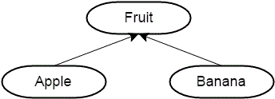
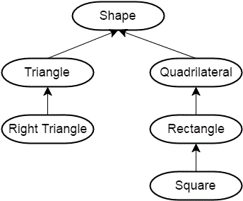

24.1 — 继承简介
在上一章中，我们讨论了对象组合，即通过更简单的类和类型构建复杂类。对象组合非常适合构建与其部件具有“有一个”关系的新对象。然而，对象组合只是 C++ 让你构建复杂类的两种主要方式之一。第二种方式是通过继承，它模拟了两个对象之间的“是一个”关系。
与对象组合不同，对象组合通过组合和连接其他对象来创建新对象，而继承则通过直接获取其他对象的属性和行为，然后扩展或特化它们来创建新对象。与对象组合一样，继承在现实生活中无处不在。当你被孕育时，你继承了父母的基因，并从他们那里获得了身体特征——但随后你在此基础上添加了自己的个性。技术产品（计算机、手机等）继承了前代产品的特性（通常用于向后兼容）。例如，Intel Pentium 处理器继承了许多由 Intel 486 处理器定义的功能，而 486 本身又继承了早期处理器的功能。C++ 继承了许多来自 C 的特性，C 是它基于的语言，而 C 又继承了许多来自其之前编程语言的特性。
考虑苹果和香蕉。虽然苹果和香蕉是不同的水果，但它们都有一个共同点：它们是 是 水果。而且因为苹果和香蕉是水果，简单的逻辑告诉我们，任何对水果成立的事情对苹果和香蕉也成立。例如，所有水果都有名称、颜色和大小。因此，苹果和香蕉也有名称、颜色和大小。我们可以说苹果和香蕉继承了（获得了）水果的所有属性，因为它们是 是 水果。我们还知道水果会经历成熟过程，从而变得可食用。因为苹果和香蕉是水果，我们也知道苹果和香蕉会继承成熟的行为。
用图表表示，苹果、香蕉和水果之间的关系可能如下所示：

这个图表定义了一个层次结构。
层次结构
层次结构是一种图表，显示各种对象之间的关系。大多数层次结构要么显示随时间推移的进展（386 -> 486 -> Pentium），要么以从一般到具体的方式对事物进行分类（水果 -> 苹果 -> 蜜脆）。如果你上过生物课，著名的域、界、门、纲、目、科、属、种排序定义了一个层次结构（从一般到具体）。
这是层次结构的另一个例子：正方形是矩形，矩形是四边形，四边形是形状。直角三角形是三角形，三角形也是形状。放入层次结构图中，看起来像这样：

这个图表从一般（顶部）到具体（底部），层次结构中的每个项目都继承其上方项目的属性和行为。
展望未来
在本章中，我们将探讨 C++ 中继承的基本工作原理。
下一章，我们将探讨继承如何通过虚函数实现多态（面向对象编程的热门术语之一）。
随着我们的深入，我们还将讨论继承的主要优点以及一些缺点。